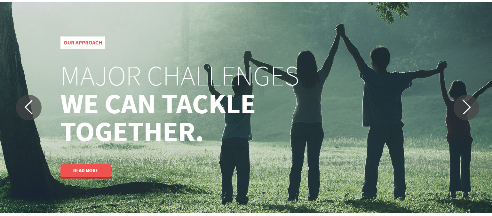
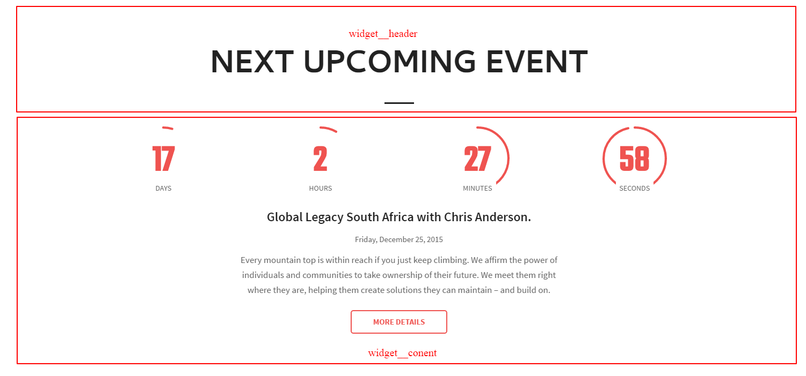
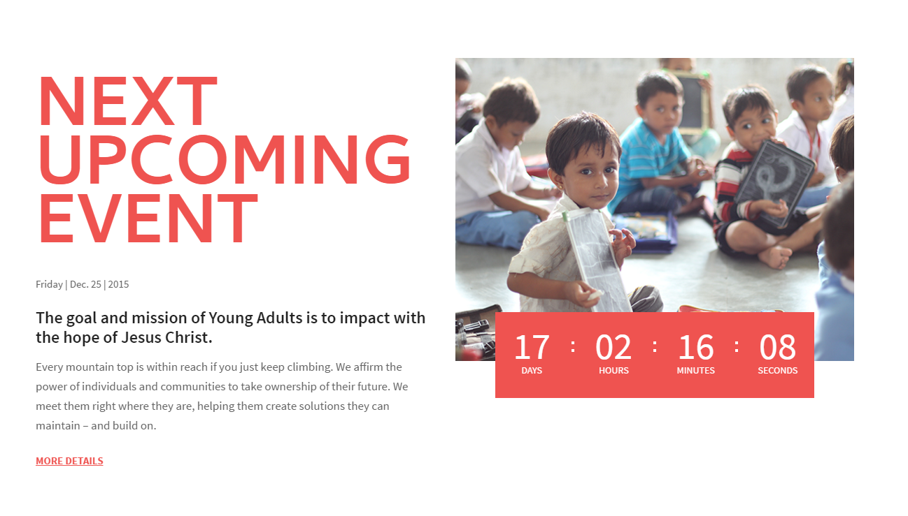
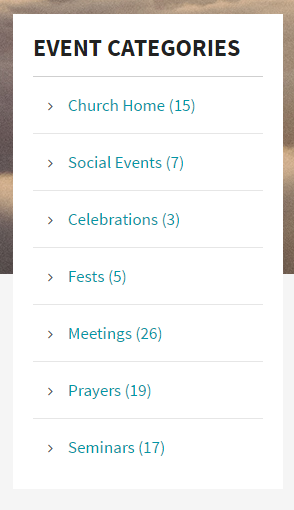
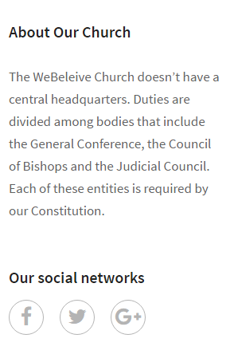
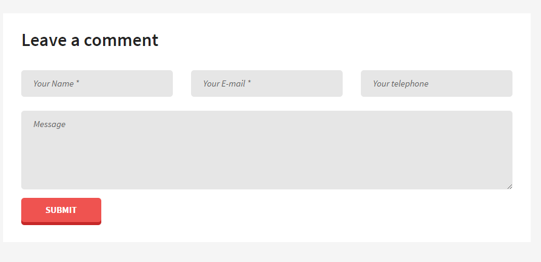
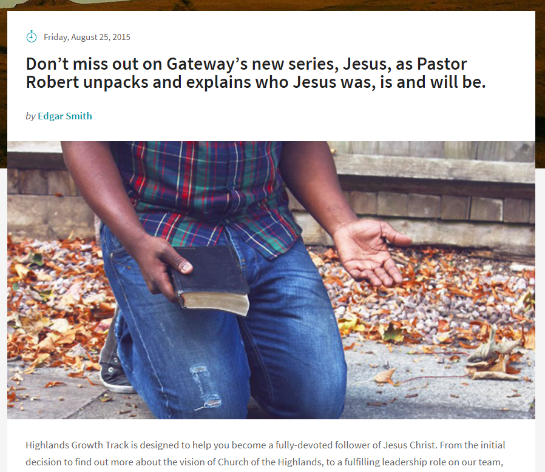
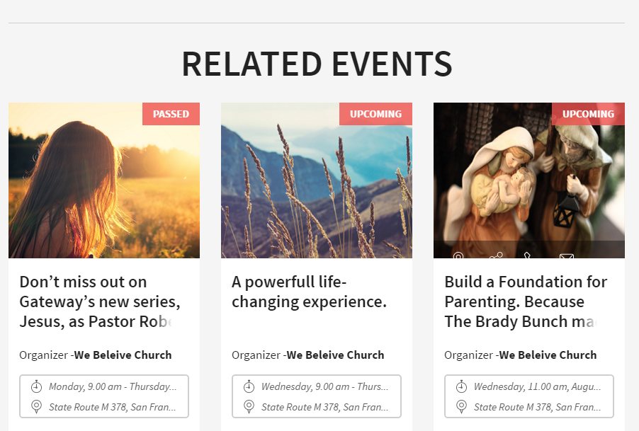
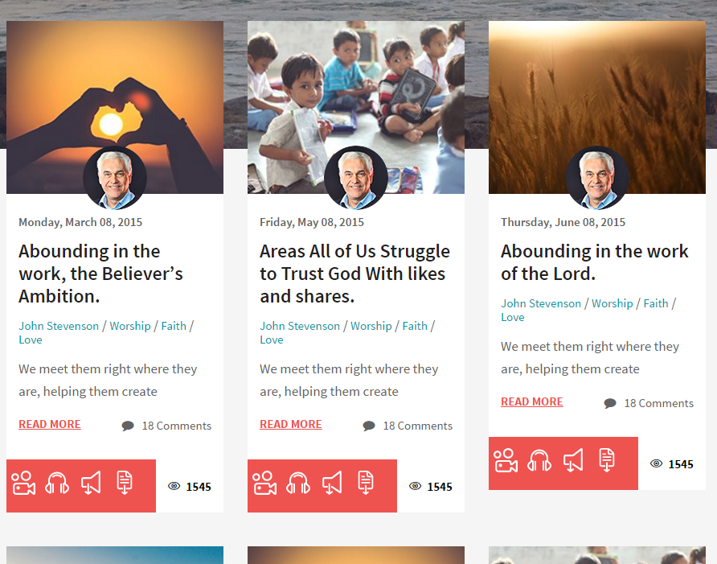

Widget¶
Widget is a special html wrapper.
Source¶
Sass styles are in folder
template_src/src/assets/sass/layout/widget.sass .Jade source are in
template_src/src/jade/partials/mixins/widget.jade .Variations¶
The list of main widgets:
widget- default block, with base styling
widget--landing- design for landing blocks, on home pages
widget--title-big- design for landing blocks, with title big, on home page V3
widget--sidebar- in sidebar section
widget--footer- in footer section
widget--card- design for section
widget--details- design for details content
widget--main- in main section
widget--listing- special wrapper for listing blocks
Example¶
<!-- BEGIN WIDGET-->
<div class="widget js-widget widget--landing">
<!-- BEGIN WIDGET HEADER-->
<div class="widget__header">
<h2 class="widget__title js-widget-title">Title of widget</h2>
</div>
<!-- END WIDGET HEADER-->
<!-- BEGIN WIDGET CONTENT-->
<div class="widget__content">
<!-- content go here -->
<!-- EXAMPLE: -->
<!-- BEGIN nextevent countcircles-->
<section class="nextevent nextevent--countcircles"><...></section>
<!-- END nextevent countcircles-->
</div>
<!-- END WIDGET CONTENT-->